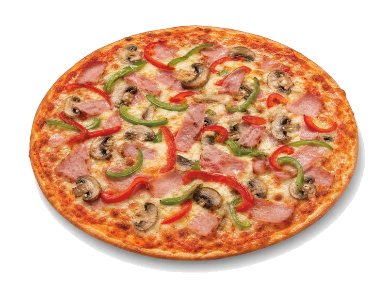

Mrożone pizze
Feliciana Speciale
Feliciana Speciale: 9.5 g białka, 237 kcal, 33 g węglowodanów i 7.2 g tłuszczu na 100 g. Kategoria: Mrożone pizze.
Kalorie237 kcalna 100 g
Białko / proteiny9.5 g
Węglowodany33 g
Tłuszcz7.2 g
Cena (szac.)~1,64 złza 100 g
Ceny zaktualizowano: maj 2026 (szacunek — ceny w popularnych supermarketach)
Porcja: cała pizza (335g)
| Kalorie | 794 kcal |
|---|---|
| Białko | 31.8 g |
| Węglowodany | 110.5 g |
| Tłuszcz | 24.1 g |
| Cena (szac.) | ~5,49 zł |
Szczegółowe składniki odżywcze na 100 g
| Wartość energetyczna (kalorie) | 237 kcal |
|---|---|
| Białko (proteiny) | 9.5 g |
| Węglowodany | 33 g |
| Tłuszcz | 7.2 g |
| Tłuszcze nasycone | 3.6 g |
| Tłuszcze nienasycone | 3.6 g |
| Witaminy i minerały (skrót) | Fosfor, Witamina B12, Cynk |
| Współczynnik kcal / 1 g białka | 24.9 |
| Cena produktu (szac. za 100 g) | ~1,64 zł |
| Cena za 100 g białka (szac.) | ~17,25 zł |
Witaminy i minerały na 100 g
Ilość w 100 g produktu oraz orientacyjny % dziennego zapotrzebowania (RDA) dla dorosłej osoby. Żelazo wg normy dla kobiet; sód jako % limitu. Wartości typowe (USDA / tabele żywieniowe / etykiety) — mogą się różnić między markami.
-
Witamina A 50 µg
-
Witamina B1 (tiamina) 0.2 mg
-
Witamina B3 (niacyna) 2 mg
-
Witamina B12 0.5 µg
-
Wapń 160 mg
-
Żelazo 1.5 mg
-
Magnez 25 mg
-
Fosfor 160 mg
-
Potas 180 mg
-
Cynk 1.8 mg
-
Selen 10 µg
-
Miedź 80 µg
-
Sód 550 mg